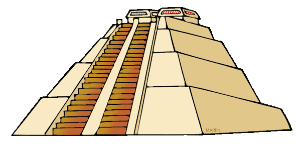
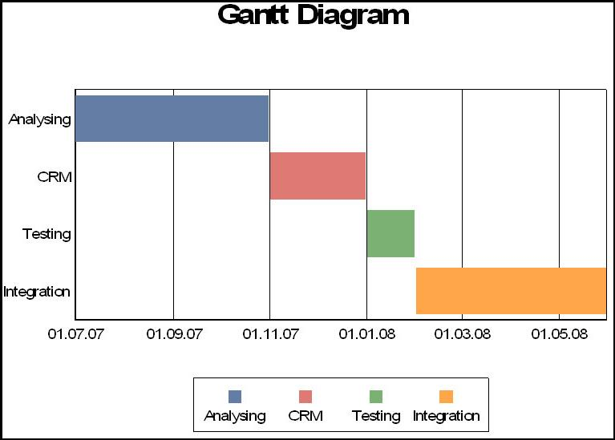

Wilco Fiers,
Deque Systems
Developer on aXe-core,
Chair of Auto-WCAG community
Slide deck
Joined Deque because I aXe-core
Developed WCAG-EM Report Tool
Former dev on QuailJS
Created EU's User Test Tool
This Workshop (1 / 2)
What is accessibility
Development strategies
Accessibility strategies
Time for a break
This Workshop (2 / 2)
Automated testing
Common accessibility checkers
Practice with aXe-core on Angular Materials
Write project specific a11y tests
But, before we start
Who are you and what do you want to learn?
Accessibility
The power of the Web is in its universality. Access by everyone regardless of disability is an essential aspect.
Sir Tim Berners-Lee, inventor of the World Wide Web
It's about people
We are all different
Young and old
At home or on the go
Bored or in a hurry
On a 10 mbit line, or a 2g data plan
Four principles of accessibility
Outlined in the Web Content Accessibility Guidelines
Principle 1: Perceivable
Images & video
Audio
Color
Presentation & reading order
Principle 2: Operable
Point devices
Time constraints
Flashing content
Navigation aids
Principle 3: Understandable
Labels and headings
Consistency
Instructions
Feedback
Principle 4: Robust
Alternative browsers
Assistive technologies
Assistive technologies
An umbrella term that includes assistive, adaptive, and rehabilitative devices for people with disabilities and also includes the process used in selecting, locating, and using them.
Assistive input
Alternative keyboards
Joystick
Sip-and-puff
Speach recognition
Assistive output
Screen magnifiers
Screen readers
Alternative display modes
Text highlighters
Basically
Don't make assumptions about which input method is used or how your output will be presented.
Development strategies
Project management history

In the olden times
Originally managed by a single person
Master builder
Creative architect
High priests
Etc.
Early project management
Henry Laurence Gantt (1861 - 1919)

Projects mid 20th century
First management tools developed in the 50's and 60's
Goal: grip on projects to manage risks
Have a predictable outcome
Innovations
Phased approach
Milestones
Being in control
Waterfall model
Based on project management model
Came about in the 70's and 80's
Organized into clear phases
Requirements
Design
Implementation
Testing
Resulting in:
Specialized teams
Sequential development
Bigger projects
Turns out software projects are hard
Definition and documentation up front
However:
Requirements change
Users don't know what they want
Waterfall problems:
Requirement changes are costly
Going back was often impossible, as the team that could do the change was already on to the next project.
Silo thinking, a focus on meeting ones own goals over end product quality
Most software projects are very much unique
Douglas Crockford
"Programing is not manufacturing, it's discovery"
Agile Development
Came around the 2000's
Manifesto for Agile Software Development, 2001
How agile differs
Less up front planning, less documentation
Multi-disciplinary teams
Close involvement of customers
Adaptive process
Discover what to make, as you are making it
Short iterations and frequent releases
The Scrumm method
Daily stand up
Product backlog
Sprints
Quality management
| Waterfall | Agile |
|---|---|
| Dedicated teams | Self tested |
| Long test phases | Frequent Testing |
| Requirements up front | Specify as you go |
Accessibility Strategies
A11y Requirements
Waterfall: Well defined up front
Agile: Decided as you go
A11y Testing
Waterfall: Dedicated test phase
Agile: Frequent, in short bursts
Test responsibility
Waterfall: Quality Assurance team
Agile: Scrum teams
Waterfall to Agile
Move from manual towards automated testing
QA teams disappear
Creation of dedicated accessibility teams
Accessibilty focus changes
Training over audits
Strategy over implementation
Aim for a11y independence
How?
Time for coffee
Automated testing
It costs significantly more to fix a bug at the end of the project than it does to fix the same bug earlier.
Pretty much every developer ever
Same is true for accessibility.
Accessibility costs up front 5% of project budget
Accessibility remediation can cost upward of 50%
Different types of tests that can be automated
Unit tests
Integration tests
End to end testing
Performance testing
unit test
Test individual bits of code
// Test the addNumbers function
it('should adds 3 numbers together', () => {
let result = addNumbers(1, 2, 3);
expect(result).toBe(6);
});
Integration test
Test how components work together:
// Message an iframe
it('receives messages send from an iframe', () => {
receiveMessage((msg) =>
expect(msg).toBe('foo'));
$('#iframe').contextWindow
.sendMessage('foo');
});
Functional Testing
Test high level functionality
// Test we get back the right page
it('returns the homepage from /home', () => {
browser.url('http://localhost/home');
expect(browser.getTitle())
.toContain('Homepage');
});
Automating accessibility
One way of automating accessibility test is this:
it('sets the alt of the logo', () => {
let alt = $('img.header-logo').attr('alt');
expect(alt).toBe('Deque');
});
Many things can be tested like this:
Are the right elements marked as headings
is the lang attribute what you expect
Titles are what you expect
etc.
--- {{ "fragmented": true }}
Question is, how valuable are such tests?
They are brittle, small changes can break this test
It only tests changes in code, not errors
We need to test at a higher level.
Accessibility Feature test:
it('has an alt on each image', () => {
browser.url('http://localhost/home');
let images = browser.get('img');
images.forEach((img) => {
let alt = img.hasAttribute('alt');
expect(alt).toBe(true);
});
})
But this is true for every page, right?
Web A11y Evaluation Tools
There are many tools for accessibility testing
Over the past year, this list has doubled!!
Let's look at some tools
There is no shortage of tools
HTML_CodeSniffer
Bookmarklet by Squizlabs
squizlabs.github.io/HTML_CodeSniffer/
Highlights errors, warnings and notices
WAVE by WebAIM
Creates an overlay of another website
Runs as an online service, or a Chrome plugin
Accessibility Checker CKSource
cksource.com/ckeditor/services
CK Editor plugin build on QuailJS
Helps fix issues
WCAG-EM Report Tool
Step by step
No automated tests at all
Creates EARL and HTML reports
PDF Accessibility Checker (PAC)
Tests PDF
Differences in tools
Standards (WCAG 2.0, Section 508)
Technologies (HTML, PDF, EPUB)
Environments (Server, Plugin, Web Page)
Different output (warning / error / violation)
Varying accuracy
Using tools in automated testing
What we need
Does not require human operator
Tests all relevant technologies
(HTML, CSS, JavaScript, ARIA)
Accuracy: Don't throw errors where there are none
Security: Keep my code private
Documentation and transparency
What you'll end up using is the Rules engine.
A Rule Engine runs a series of rules on a web page.
Each Engine has their own rule set
There are several Rule engines like this
| Open Source | Proprietary |
|---|---|
| aXe-Core | Tennon |
| QuailJS | WAVE |
| AccessLint |
Implementing a Rule Engine
Angular Material
UI Framework developed by Google
Based on the popular Angular framework
Installing the project
Requires: GIT, NodeJS, then run:
git clone https://github.com/↵
wilcofiers/material.git
cd material
npm install
npm install -g gulp-cli
gulp karma-a11y
Your first test
Go to the folder material/test/accessibility
Open the file button.a11y.js
Define a group of tests
describe('md-button accessibility',
function () {
//...
});
Identify the module to Angular
beforeEach(module(
'material.components.button'));
Set up a DOM element to test on
var fixture, compileToFixture;
beforeEach(inject(function
($compile, $rootScope) {
// from __helper-functions.js
fixture = getFixture();
compileToFixture = createFixtureAppend(
$compile, $rootScope);
}));
Define a test
it('has 0 violations in axe',
function (done) {
// ... test code ...
});
Create a component and test using axe
compileToFixture(
'<md-button>Button Name</md-button>');
axe.a11yCheck(fixture, function (results) {
expect(results.violations.length).toBe(0);
done();
});
Running this test
material/test/accessibility
Run the test command:
npm run a11y-test
Try removing 'Button Name'. You will see an error
Try it yourself
Check out
readme.md: More detailed instructionscheckbox.a11y.js: A slightly more advanced examplematerial.angularjs.org/: Angular Material documentation
Suggested tests to try
test md-button when disabled (easy)
complexity: low.
input, radioButton, select, slider, switch
complexity: average.
chips, menu, tabs,
complexity: high.
menubar, autocomplete, dialog
Test Rules
Test rules do (1 / 2)
Check for alternatives
image alt, aria-label, video <caption>
Check relations:
form field labels, longdesc, aria-owns
Measure color contrast
Parsing
Test rules do (2 / 2)
Required accessibility features:
lang, title, bypass blocks
Table headers
Validate ARIA compliance
Zoom / resize restrictions
Auto-refresh
Test rules don't (1 / 2)
Language detection
Image recognition / OCR
Test for events (onfocus, onchange, etc.)
Compare between pages
Test rules don't (2 / 2)
Look at contrast with background images
Identify decorative images
Detect keyboard traps
Test templates
Fill the gaps
Beyond standard tools
20 - 30%
Tools are limited
You know your site better
Functional a11y tests
Things you should test
Are roles on the right elements
Does focus move to the right place
Correct state changes
Are relations maintained
Because bugs in ARIA are:
Easily made
Hard to fix
But even harder to find
Focus moves
ìt('opens a dialog', function () {
myButton.activate();
expect(myDialog.state).toBe('open');
expect(myDialog.elm.getAttribute('role'))
.toBe('dialog');
// Check focus moved
expect(document.activeElement)
.toBe(myDialog.elm);
});
State is updated
it('selects the tab', function () {
myTab.activate();
expect(myTabPanel.getActive().name)
.toBe('myTabPanel');
// Test the aria-state has changed
var selected = myTab.elm.attr('aria-selected')
expect(selected).toBe('true');
});
Test relationships
it('contains tabs', function () {
// test the roles of tab and tabpanel
expect(myTabPanel.elm.attr('role'))
.toBe('tabpanel');
expect(tabs[0].elm.attr('role'))
.toBe('tab');
// test the parent / child relationship
expect(myTabPanel.elm.children[0])
.toBe(tabs[0].elm);
});
In conclusion
Scrum teams must test for accessibility
Use a tool like aXe-core to catch common errors
Unit tests your dynamic components
Keep doing manual tests

@wilcofiers